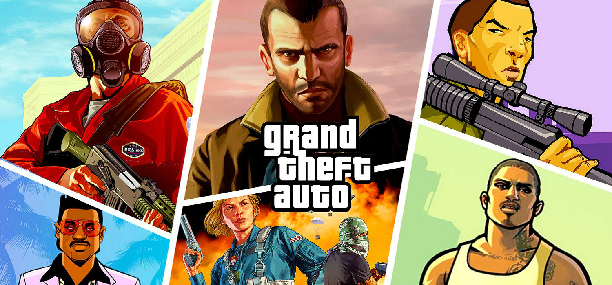
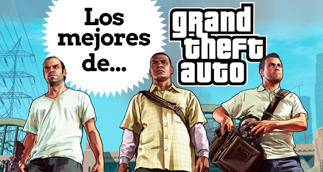
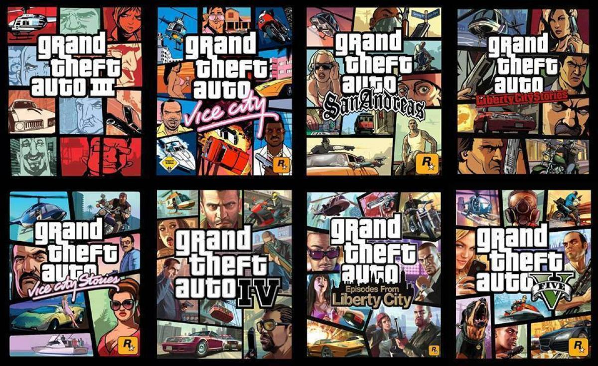
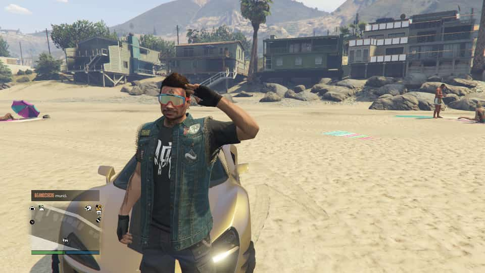

Grand Theft Auto V üòéü§ò
Fue lanzado el 17 de septiembre de 2013 para las consolas PlayStation 3 y Xbox 360.4 Posteriormente,
fue lanzado el 18 de noviembre de 2014 para las consolas de nueva generación PlayStation 4 y Xbox One con
mejores gráficos y novedades interesantes como la vista en primera persona, luego para Microsoft Windows el 14 de abril de 2015.
El juego está ambientado en la ciudad ficticia de Los Santos, así como en las zonas que la rodean, basada en la ciudad de Los Ángeles y el sur de California.
Grand Theft Auto V modo historia
Michael Townley, Trevor Philips y Brad Snider eran ladrones de bancos que vivían
en Ludendorff, en el estado de North Yankton.). Michael, queriendo huir de esa vida entonces, planea
un atraco falso junto al agente federal corrupto Dave Norton,Pero todo sale mal porque Dave en vez de
dispararle a Trevor, dispara a Brad y Trevor escapa. Michael es dado por muerto y es llevado a "Los Santos"
por el agente corrupto del FIB Dave Norton,Michael descubre a su esposa Amanda en la cama con su entrenador de tenis
Kyle Chavis, él y Franklin lo persiguen hasta una mansión, la cual Michael destruye con furia, Para su mala suerte,
la propiedad pertenece a Martín Madrazo. Ellos acceden a pagar
su deuda mediante el dinero obtenido de un robo a una sucursal de la cadena de joyerías Vangelico..
El golpe es un éxito, pero Franklin es presionado por Haines y Weston para asesinar a Trevor y Michael, respectivamente.
Clinton tiene tres opciones: matar a Trevor, a Michael o permitirles vivir pero arriesgar su vida y enfrentar a sus enemigos.
En caso de que Franklin asesine a cualquiera de los dos, este regresa a su antigua vida y cesa el contacto con el sobreviviente.
Alternativamente, si no mata a ninguno, el trío une fuerzas para resistir una embestida del FIB y Merryweather




Todos los derechos reservados Luis, Andr√© y Carlos Arellano ©